Ratio Analysis
Ratio analysis are useful in understanding financial outcomes over time. They provide signs related to how a business is performing. Ratio analysis are most commonly used to identify where a business, company, firm etc. is in terms of strengths and weaknesses and how best to go about creating strategies that will help.
Current Ratio
A current ratio is done by taking, in our case, a firm’s current assets and dividing that number by the firm’s current liabilities. Given the list of variables we can only assume that our current ratio is defined by CURASS/CURDEBT or R9. A higher ratio signals a healthier firm, for example firms with current ratios 2 or more reflect healthy finances while a current ratio of 1 or less signal what could be a problem.
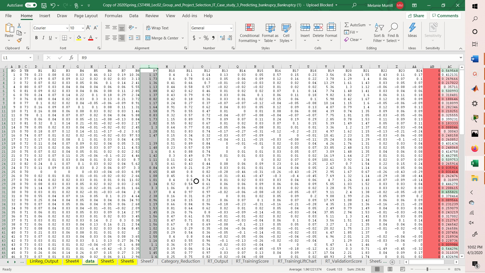
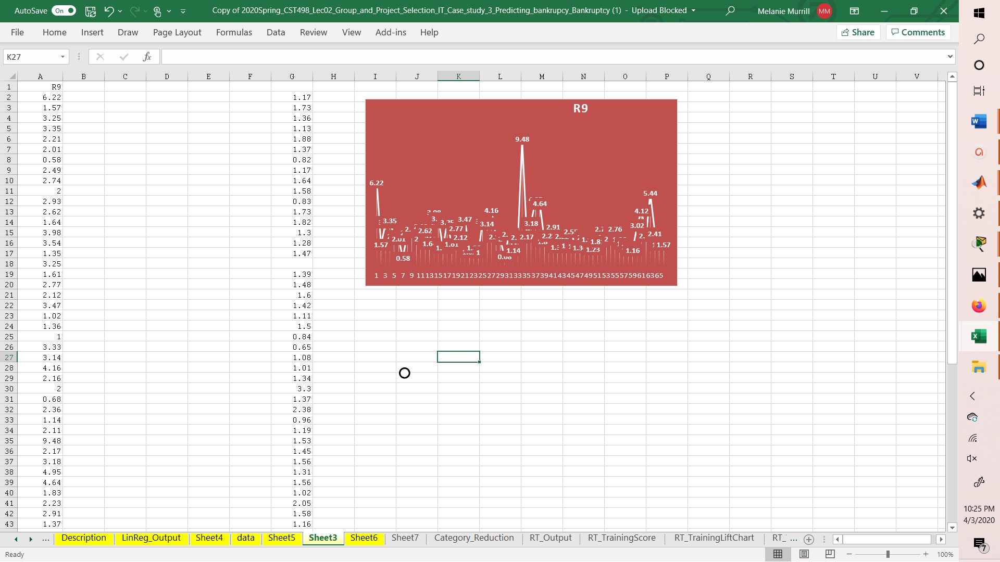
Healthier firms are reflected here.
As you can see most of the current ratios reflect values of two or more, although a few and less than two they can ultimately be rounded to 1 reflecting the fact that the firm would still be able to cover expenses.
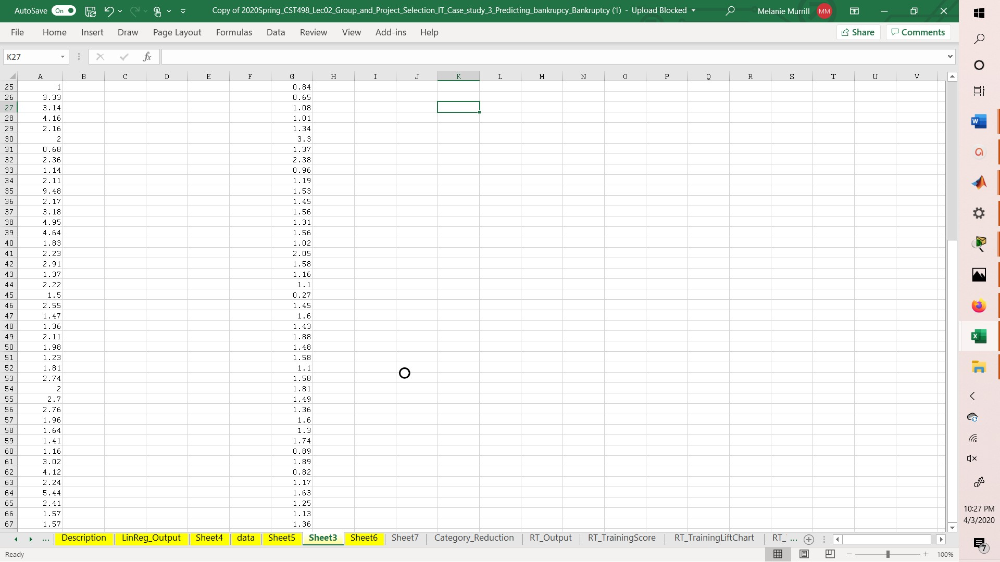
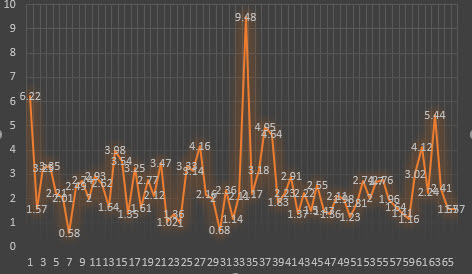
Unhealthy firms are reflected below.
As you can see the numbers reflect lower average values.
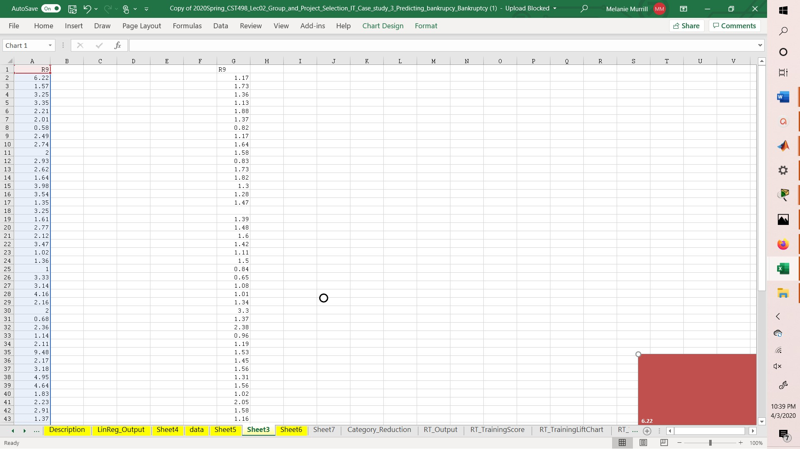
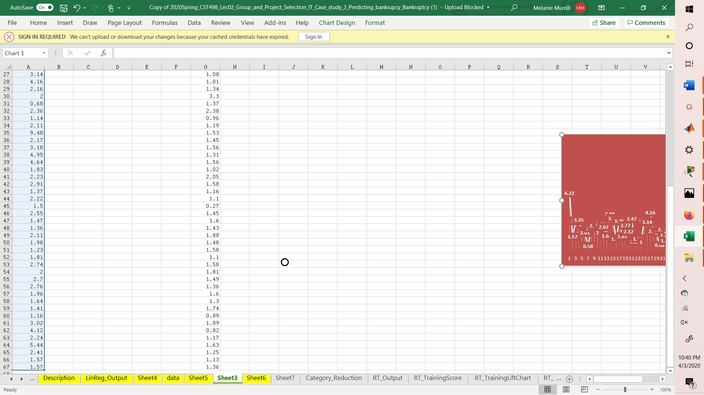
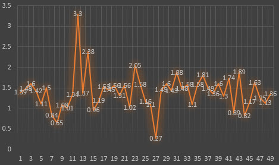
Cash Flow to Debts Ratio
A cash flow to debts ratio is calculated by dividing the cash flow from operations by total debt. Given the list of variables we can assume these values are represented by ‘CFFO/DEBTS’ or R7 from the description sheet. Healthier ratios are usually those that are higher than 1. Any ratio that is under one reflects an approaching bankruptcy.
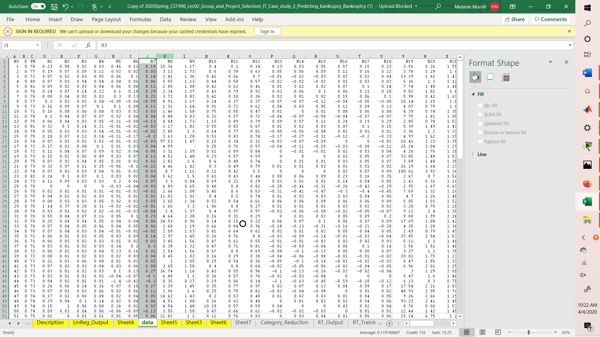
Firms identified as unhealthy are shown below.
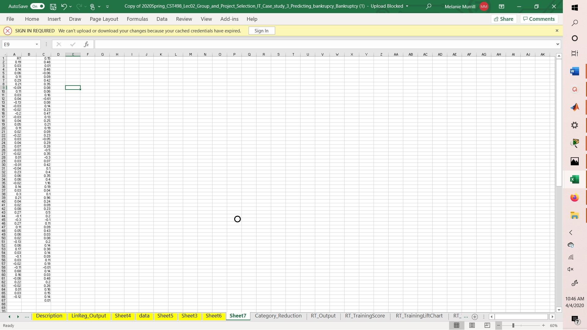
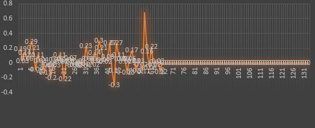
Firms identified as healthy are reflected below.
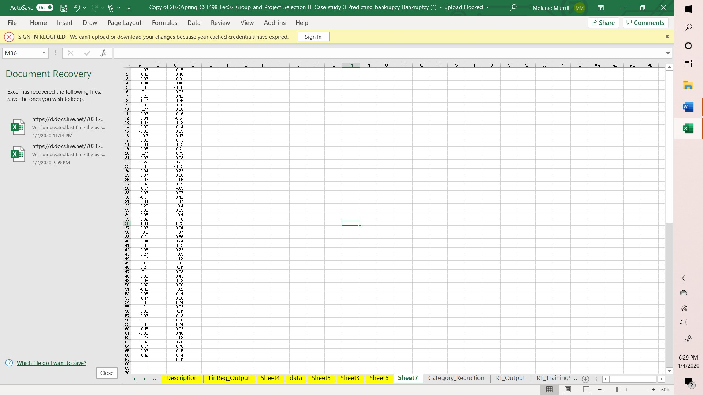
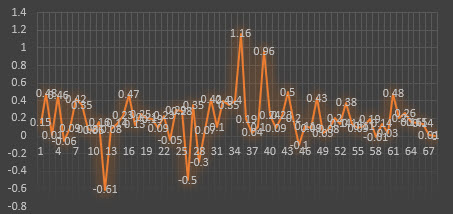
**** We would normally add a Debt to Equity ratio if the information was given, but it is not. Otherwise these two ratios are some of the most relevant in predicting bankruptcy.
Source:
"Predicting Corporate Bankruptcy"
Darden Business Publishing
Case authors Mark E. Haskins (HASKINSM@Darden.virginia.edu) and Phillip E. Pfeifer (PFEIFERP@Darden.virginia.edu)
NO--> Arbitrary ID number for each firm.
D--> D=0 for failed firms, D=1 for healthy firms.
YR--> Year of Bankruptcy for failed firm in matched pair
R1--> CASH/CURDEBT
R2--> CASH/SALES
R3--> CASH/ASSETS
R4--> CFF0/SALES
R6--> CFFO/ASSETS
R7--> CFFO/DEBTS
R8--> COGS/INV
R9--> CURASS/CURDEBT
R10--> CURASS/SALES
R11--> CURRASS/ASSETS
R12--> CURDEBT/DEBTS
R13--> INC/SALES
R14--> INC/ASSETS
R15--> INC/DEBTS
R16--> UBCDEP/SALES
R17--> INCDEP/ASSETS
R18--> INCDEP/DEBTS
R19--> SALES/REC
R20--> SALES/ASSETS
R21--> ASSETS/DEBTS
R22--> WCFO/SALES
R23--> WCFO/ASSETS
R24--> WCFO/DEBTS
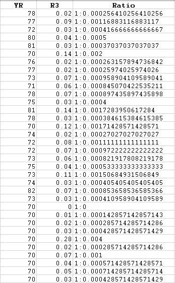